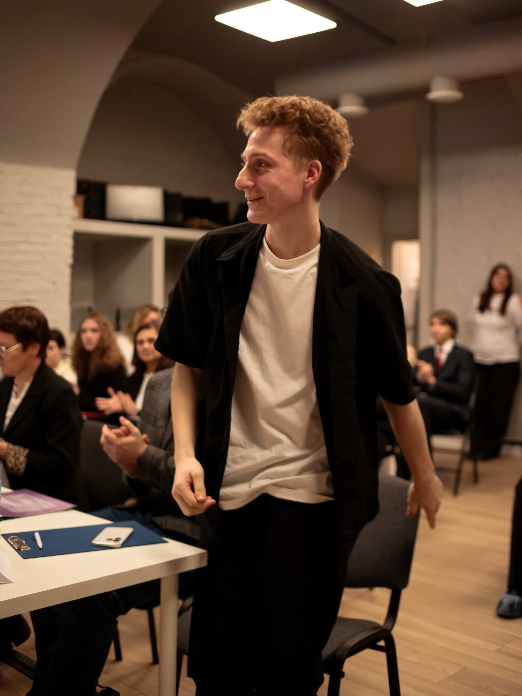
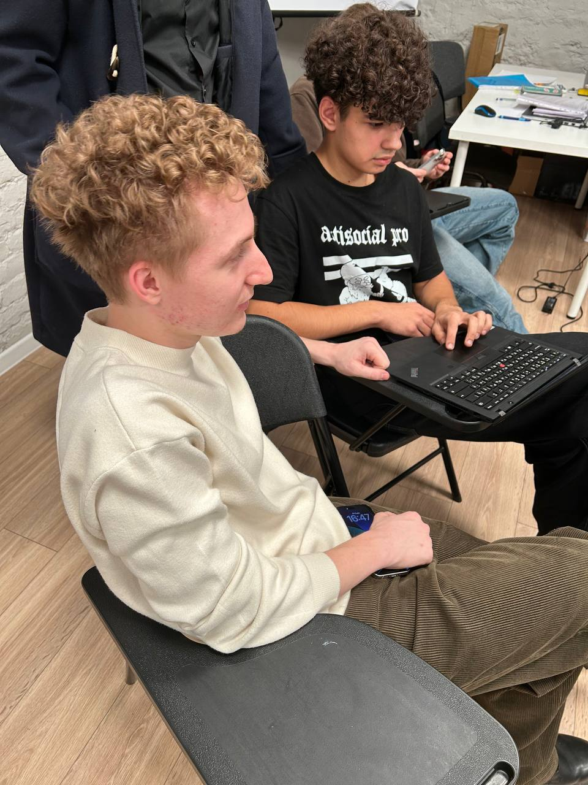
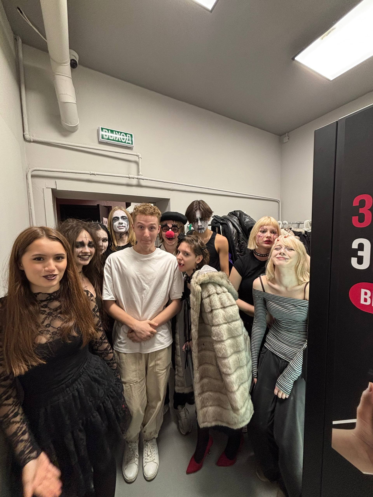
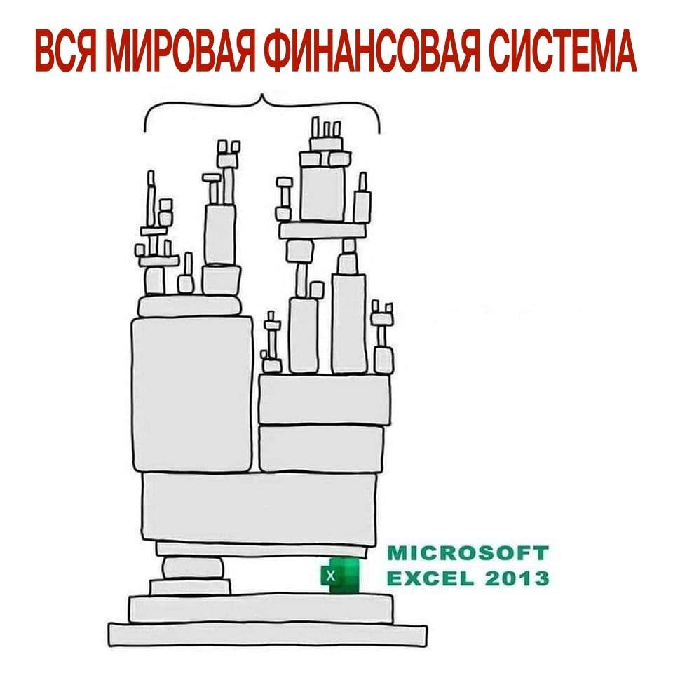
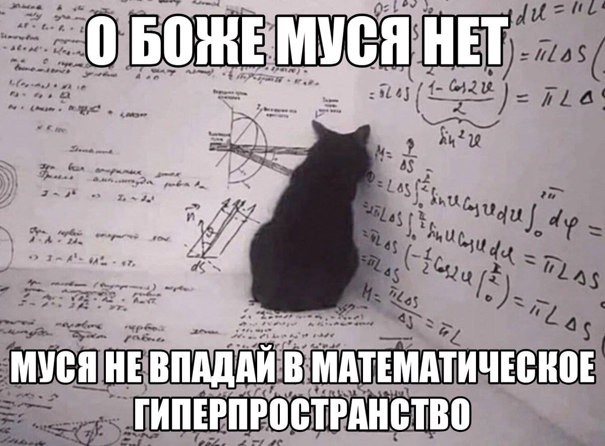
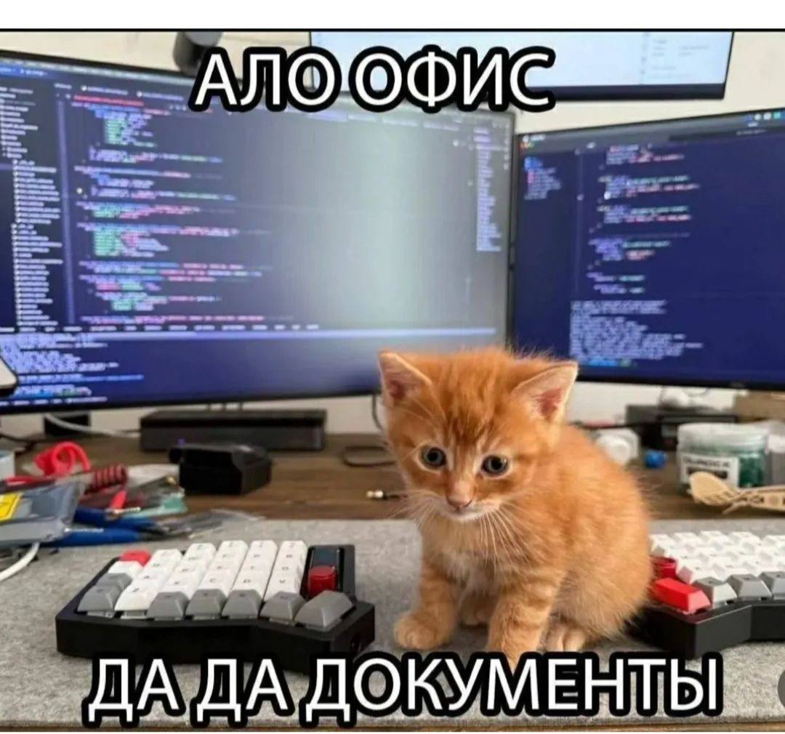
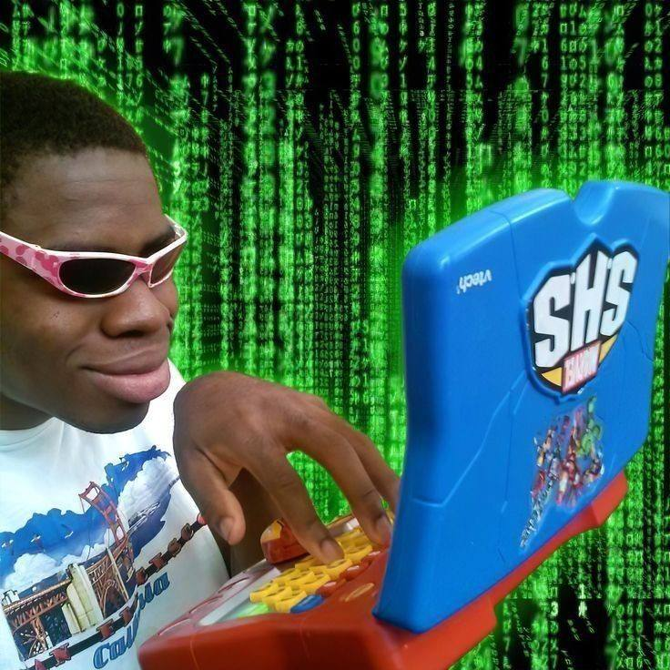

Карта города — это граф: перекрёстки и дороги между ними. Приложение ищет самый быстрый путь и пересчитывает его, когда впереди встаёт пробка.
граф · кратчайший путьНовый учебный год · 3 курс · 2026/2027
Основы
алгоритмизации
и программирования
От задач, которые работают вокруг нас, — к алгоритмической секции уровня intern/junior.
154 часа77 занятий≈ 82% практики







Где мы теперь пересекаемся
Заведующий кафедрой разработки
и управления программным обеспечением
МакаровМаксим Николаевич
На парах меня стало чуть меньше. Зато больше меня будет за пределами расписания: мероприятия, мастер-классы и дополнительные лекции по тому, что важно для профессии, но в учебный план не помещается.
мероприятиямастер-классыхакатоны и конкурсыдополнительные лекции
«Обучая других, мы учимся сами.»
Сенека
2 сентября · первая пара
Что начинается
сегодня?
Первая точка нового учебного года
ОП.04 · содержательная часть 136 часов
Год, в котором код придётся объяснять
Синтаксис Python мы уже прошли, и заново его разбирать не будем. На этой дисциплине работа другая: подобрать структуру данных под ограничения задачи, прикинуть, сколько операций займёт решение, и объяснить, почему оно даёт верный ответ.
136часов практики и теории
68содержательных занятий
18часов консультаций и экзамена
«Программы нужно писать так, чтобы их читали люди, и лишь попутно — чтобы их выполняли машины.»
Абельсон и Сассман · SICP
Вопрос 01 · алгоритмы вокруг нас
Где встречаются
алгоритмы?
До того, как мы открываем редактор кода
Обычное утро · вы ещё не дошли до пары
Пока вы собирались, отработал десяток алгоритмов
Постов тысячи, а на экран помещается десяток. Каждому считается оценка, и лента упорядочивается по ней за доли секунды.
сортировка · ранжированиеСловарь хранится в префиксном дереве: буквы слова лежат по пути от корня. По трём символам подбирается продолжение, и перебирать весь словарь не нужно.
дерево · поиск по префиксуНичего из этого не сделано «вручную»: в каждом случае работает известный алгоритм, который мы разберём на этой дисциплине.
День продолжается
Оплата, фотография, музыка — снова алгоритмы
Пока терминал думает, операция проверяется по правилам и сравнивается с историей трат. Резкое отклонение — повод остановить платёж.
поиск аномалииСнимок на 20 мегапикселей весит несколько мегабайт. JPEG раскладывает изображение косинусным преобразованием и упаковывает результат кодами Хаффмана.
сжатие · частотыКаждый трек описан набором чисел. Подборка — это поиск ближайших к вашим прослушиваниям точек среди миллионов.
поиск ближайших соседейОбратите внимание: везде есть вход, ограничение по времени и требование к результату. Ровно так формулируются задачи на собеседовании.
Не только в приложениях на телефоне
Медицина, связь и игры считают то же самое
Прибор читает миллионы коротких фрагментов ДНК. Целую последовательность восстанавливают, склеивая фрагменты по совпадающим концам — это обход графа.
граф перекрытийКод читается, даже если часть закрыта пальцем. В него заранее добавлены избыточные символы, по которым потерянные данные восстанавливаются.
коды Рида — СоломонаПерсонаж обходит стены алгоритмом A*, а подбор соперников выстраивает игроков по рейтингу и берёт ближайших.
поиск пути · порядокЗадачи из разных отраслей, но техника одна: представить данные структурой и найти в ней нужное за приемлемое время.
Инженерные системы
Там, где алгоритма вообще не видно
Мощность нужно развести по линиям так, чтобы ни одна не ушла в перегрузку. Это классическая задача о потоке в сети.
поток в сетиКадры почти не отличаются друг от друга. Кодек передаёт не картинку целиком, а смещения блоков относительно предыдущего кадра.
сравнение блоковПары, у которых совпадают группа или преподаватель, нельзя ставить в одно время. Такое расписание строят раскраской графа.
раскраска графаВ каждом примере кто-то однажды описал правила и оценил, сколько они стоят по времени и памяти. Этому мы и учимся.
Почему задач много, а способов решать их мало
Три разные истории — одна и та же задача
«Есть точки и связи между ними. Нужно добраться от одной точки до другой за наименьшее число шагов». Дальше меняются только названия.
Точки — перекрёстки, связи — улицы между ними. Ответ: по каким улицам ехать до дома.
перекрёстки · улицыТочки — станции, связи — перегоны и переходы. Ответ: сколько пересадок и каких.
станции · перегоныТочки — люди, связи — кто с кем знаком. Ответ: через сколько знакомых вы дойдёте до нужного человека.
люди · знакомстваКод во всех трёх случаях получается почти одинаковый — меняются только имена переменных. Таких механизмов около двадцати, и на дисциплине мы разбираем именно их.

Вопрос 02 · точное понятие
Что называется
алгоритмом?
Определение должно объяснять механизм
Определение
Алгоритм — конечная последовательность однозначных действий, которая преобразует входные данные в требуемый результат.
вход
→
[7, 2, 9, 2]шаг
→
best = max(best, число)результат
best = 9Конечностьвыполнение завершается за определённое число шагов, а не «когда-нибудь»
Однозначностькаждый шаг понимается одинаково любым исполнителем
Массовостьработает на всём классе допустимых входов, а не на одном примере
Инвариант — то, что верно на каждом шаге. Здесь best проходит значения 7 → 7 → 9 → 9, и в нём всегда максимум уже пройденной части. Числа закончились — пройден весь список, значит в best максимум. Так и объясняют, почему цикл даёт правильный ответ.
Вопрос 03 · готовые библиотеки
Зачем изучать их,
если существуют готовые функции?
Функция выполняет операцию, но не выбирает решение
Функция выполняет операцию · решение принимает программист
Три вещи, которые библиотека за вас не сделает
Проверка in есть и у списка, и у множества — код почти одинаковый. Какую из них взять под ваши данные, решаете вы, и от этого зависит время работы. Дальше — на конкретных числах.
Программа с правильным ответом может считать часами. Библиотека об этом не скажет: понять это нужно заранее, прикинув число операций на предельном размере входа.
оценка до запускаНа собеседовании спрашивают, почему выбран этот способ и что произойдёт на пустом вводе или дубликатах. Ответ «так делает библиотека» там не засчитывают.
обоснование выбораГотовые функции никто не запрещает — наоборот, на интервью ими пользуются. Работа программиста начинается там, где нужно выбрать между ними и доказать, что выбор верный.
Та же строка if x in seen · встречалось ли раньше число 42?
Список ищет перебором, множество попадает сразу
Список
seen = []
1742381542931628
6 шаговпрошли всё до совпадения
Множество
seen = set()
·····42····
адрес считается из самого числа
1 шагсразу в нужную ячейку
А теперь миллион элементов и миллион проверок
списокдо 10¹² сравнений · часы
множество10⁶ проверок · секунды
Одна и та же строка if x in seen работает по-разному: всё решает то, куда мы сложили данные. Библиотека даёт операцию, а структуру выбираете вы.

Вопрос 04 · программные системы
Где алгоритмы работают
внутри реальных программ?
Между пользовательским действием и ответом системы
Типовые механизмы
Данные нужно найти, связать, упорядочить или сократить
Сокращает перебор с миллионов документов до сотен.
Hash и очередь решают, что хранить и что вытеснять.
Heap выдаёт следующий запрос по приоритету за O(log n).
Топологическая сортировка задаёт порядок сборки.
Окно и счётчики держат в памяти только нужный отрезок.

В сервисе это один путь запроса: очередь → индекс → кэш → обновление данных. Каждый механизм разбираем отдельной темой.
Вопрос 05 · алгоритмическая секция
Что проверяют
на алгоритмическом собеседовании?
Готовый код — только часть результата
60 минут · одна-две задачи · знакомый вам язык
Интервьюер видит восемь действий
- 01понять условие
- 02задать вопросы
- 03привести примеры
- 04предложить brute force
- 05оптимизировать
- 06написать код
- 07проверить
- 08объяснить
15% условие25% алгоритм20% код15% тесты15% сложность10% коммуникация
Эти доли — та же рубрика, по которой мы будем оценивать вас до конца дисциплины. Заметьте: собственно набор кода — только 20%. Молчаливое решение без объяснения теряет больше баллов, чем решение с найденной и исправленной ошибкой.
Этап 01 из 08 · алгоритмическая секция
01Понять условие
Прежде чем писать код, задачу пересказывают своими словами: что приходит на вход, что должно оказаться на выходе и что считается верным ответом.
«Правильно я понял: на вход список чисел и число S, вернуть нужно индексы двух чисел, которые дают в сумме S?»
Формулируете вход, выход и критерий ответа своими словами, не подглядывая в текст условия.
Совпадает ли ваш пересказ с условием. Пока пересказа нет, интервьюер не знает, ту ли задачу вы решаете, и первую галочку в рубрике не ставит.
Прочитать первые строки, узнать похожую задачу и начать писать её решение. Через двадцать минут выясняется, что условие было другим.
Этап 02 из 08 · алгоритмическая секция
02Задать вопросы
В условии почти всегда чего-то не хватает — и это сделано намеренно. Недостающие ограничения кандидат выясняет сам.
«Какой максимальный n? Могут ли числа повторяться? Что вернуть, если пары нет?»
Максимальный размер входа, диапазон значений, возможны ли дубликаты и отрицательные числа, отсортированы ли данные, что вернуть, если ответа нет.
Заданы ли вопросы до начала кода и по делу ли они. Главный из них — размер входа: от него зависит, какое решение вообще имеет смысл писать.
Молча решить, что дубликатов не бывает, а вход маленький, — и написать решение, которое на реальных данных не работает.
Этап 03 из 08 · алгоритмическая секция
03Привести примеры
Свои примеры — способ проверить понимание и заранее увидеть случаи, на которых решение сломается.
«Проверю на [], на [5] и на [2, 2, 3] — там два одинаковых числа.»
Берёте обычный пример, а рядом кладёте краевые: пустой ввод, один элемент, все элементы одинаковые, ответа не существует.
Придуманы ли примеры вами и есть ли среди них краевые. Обычно ждут три-пять случаев, и те же самые потом стоят в скрытых тестах.
Ограничиться примером из условия. Он всегда удобный и не проверяет ни одной границы.
Этап 04 из 08 · алгоритмическая секция
04Предложить brute force
Brute force, или полный перебор, — решение «в лоб»: проверить все возможные варианты и выбрать подходящий, ничего не сокращая. Оно очевидное, пишется за пару минут и даёт верный ответ, но на больших данных работает слишком долго.
Задача: найти два числа с суммой S. Перебор — проверить все пары: для 1000 чисел это около миллиона проверок, для миллиона — уже триллион.
«Начну с перебора всех пар, а потом уберу вложенный цикл.»
Описываете перебор, называете его стоимость и сразу говорите, что дальше будете улучшать.
Появилось ли работающее решение и назвали ли вы его стоимость. Медленный перебор, который проходит небольшие данные, уже засчитывается.
Молчать несколько минут в поисках лучшего решения. Интервьюер видит пустой экран и не понимает, движетесь вы или встали.
Этап 05 из 08 · алгоритмическая секция
05Оптимизировать
Улучшение начинается с вопроса, что в переборе пересчитывается зря. Ответ обычно в структуре данных.
«Внутренний цикл ищет число в списке. Заменю список на множество — проверка станет мгновенной, и хватит одного прохода.»
Ищете лишнюю работу и убираете её: заменяете структуру, идёте двумя указателями, ведёте окно или запоминаете уже посчитанное.
Можете ли вы сказать, за счёт чего решение ускорилось и какой стала новая стоимость. Ответ «стало быстрее» не принимается.
Переставлять строки, пока не заработает. Такое решение потом невозможно объяснить, а объяснение спрашивают обязательно.
Этап 06 из 08 · алгоритмическая секция
06Написать код
Код пишется в простом редакторе: без автодополнения, подсветки ошибок и подсказок среды.
Понятные имена, ранний выход из цикла, минимум вложенности. Пишете основной алгоритм целиком, а не по кусочкам.
Понятен ли код без ваших пояснений: имена, структура, отсутствие лишней вложенности. Плюс темп — на задачу отводится около получаса.
Наводить красоту в первых строках, не дописав основной алгоритм, и не успеть к концу секции.
Этап 07 из 08 · алгоритмическая секция
07Проверить
Решение проверяет сам кандидат, до слов «я закончил». Интервьюер ждёт именно этого шага.
«Прогоню на [2, 2, 3] и S = 4: i = 0, второе число 2 уже встречалось — ответ [0, 1].»
Проходите код по строкам на своём примере, отдельно прогоняете границы: пустой ввод, один элемент, повтор, отсутствие ответа.
Проверили ли вы решение до слов «готово» и нашли ли ошибку сами. Найденная и исправленная вами ошибка засчитывается как часть работы.
Сказать «готово», не прогнав ни одного примера. Тогда ошибку находит интервьюер — и это уже его наблюдение, а не ваше.
Этап 08 из 08 · алгоритмическая секция
08Объяснить
В конце нужно сказать, сколько решение стоит по времени и памяти и почему оно даёт верный ответ.
«Один проход по массиву — n операций. Множество хранит до n чисел, значит памяти тоже порядка n.»
Называете число операций и объём памяти, показываете инвариант и говорите, что изменится при росте входа.
Разбираете ли вы сложность по операциям цикла или называете формулу по памяти. Здесь же спрашивают про компромисс: что выиграли и чем за это заплатили.
Сказать «ну, тут O(n)», не показав, откуда взялась эта оценка и что считается внутри цикла.

Вопрос 06 · ограничения задачи
Почему верное решение
не проходит проверку?
Ответ правильный, а вердикт — TLE
Вердикт TLE · Time Limit Exceeded
Ответ верный, но проверка его не дождалась
У каждой задачи есть лимит времени — обычно одна-две секунды. Компьютер за секунду выполняет порядка десяти миллионов простых операций. Значит, всё решает одно: сколько операций сделает ваша программа.
Доли секунды. Проверка принимает решение и идёт дальше.
10⁶ · зачтеноОколо двух минут. Лимит в секунду давно вышел, задача снята.
10⁹ · не уложилисьБольше суток. Ответ правильный, но увидеть его никто не успеет.
10¹² · TLEПоэтому число операций считают заранее, по коду, — а не запускают программу и смотрят, что будет.
Считаем, сколько раз выполнится тело цикла · n = 1 000 000
Форма кода сразу говорит о числе операций
for x in data:
...Тело выполняется столько раз, сколько элементов: миллион.
записывают как O(n)for x in data:
for y in data:
...На каждый элемент — ещё один полный проход: миллион × миллион.
записывают как O(n²)while n > 1:
n = n // 2Каждый шаг оставляет половину: 1 000 000 → 500 000 → … → 1. Это 20 шагов.
записывают как O(log n)Запись O(...) — это не секунды, а способ коротко сказать, как растёт число операций при росте входа. Слово «сложность» означает ровно это.
Разница на одном и том же входе в миллион элементов
Ограничение из условия подсказывает решение
O(log n)около 20 шагов
O(n)1 000 000
O(n log n)около 20 000 000
O(n²)1 000 000 000 000
n ≤ 1 000проходит даже вложенный цикл
→n ≤ 100 000нужен проход с сортировкой
→n ≥ 1 000 000остаётся один проход или деление пополам
Вот зачем на интервью сразу спрашивают размер входа: по нему видно, какое решение вообще имеет смысл писать. А фактическое время мы отдельно замеряем через time.perf_counter() и timeit — не меньше пяти повторов и по медиане серии, иначе один запуск ничего не доказывает.
Вопрос 07 · основание программы
Как проводился
аудит рынка?
Сопоставлялись форматы, критерии и повторяющиеся темы
Срез на 1 августа 2026 года
Программа собрана по открытым материалам рынка
Сравнивались интервью-гайды компаний, публичные контесты, разборы задач и образовательные материалы. В программу вошли темы, которые повторяются в требованиях к intern/junior.
Для каждого утверждения проверялись источник, дата, роль кандидата и уровень. Процесс найма зависит от компании и может меняться, поэтому курс готовит не к одной компании, а к пересечению требований.
01Собрать открытые источники
02Выделить критерии оценки
03Сопоставить структуры и техники
04Оставить пересекающееся ядро
Вопрос 08 · рыночный ориентир
Какие компании
и площадки изучались?
Только открытые материалы с проверяемыми ссылками
Что именно берётся из каждого источника
Две задачи за час, знакомый язык, оценка выбора структур и объяснения.
официальный гайд ↗
Строки, списки, деревья, ассоциативные массивы, сортировки, DP, время и память.
официальный гайд ↗
Следить за таймингом и сначала писать основной алгоритм, а не рефакторить.
AvitoTech ↗
Скрытые тесты, разбор WA / TLE / RE, задачи с прикладным условием.
Ozon Tech ↗
Карьерная среда — без неподтверждённых заявлений о формате секции.
Alfa Digital ↗CodeRunЯндекс КонтестRoute 256LeetCodeHackerRank
Логотипы используются для учебного обзора и не означают партнёрство или одобрение курса.
Вопрос 09 · результат аудита
Какие темы составляют
общее ядро?
Повторяются классы решений, а не отдельные условия
Обязательное ядро
Структуры + техники + объяснение
массивыстрокиtwo pointerssliding windowprefix sums
hash mapsetstackqueueсортировка
binary searchheapдеревьяграфыDFS / BFS
recursionbacktrackinggreedyдинамическое программирование
Структуры как организованы данныеТехники как сокращается переборПроцесс как доказать и проверить решение
В программу не вошли сегментные деревья и Fenwick, потоки и matching, суффиксные структуры, вычислительная геометрия и олимпиадные оптимизации: на junior-секциях они почти не встречаются.
Через все темы проходят O-нотация, тесты, dry run, code review и устное объяснение.
Вопрос 10 · маршрут курса
Что конкретно
будем изучать?
Восемь разделов — от оценки эффективности до DP
68 содержательных занятий
Деревья и графы начинаются с нуля. Каждый раздел закрывается mock-интервью: 16, 26, 36, 44, 52, 62.
Вопрос 11 · рабочий процесс
Как задача превращается
в принятое решение?
Код появляется не на первом шаге
Interview canvas · шаблон появится на занятии 2
1Условиепересказать своими словами
→
2Уточненияразмер входа, дубликаты, пустой ввод
→
3Примерыобычный, граничный и отказной случай
→
4Brute forceполучить корректную основу
→
5Оптимизациявыбрать структуру и инвариант
→
6Код и проверкаdry run · тесты · сложность
Решение принято, если онокорректноукладывается в ограниченияпроверено на границахобъяснено
Один и тот же порядок действий мы повторяем на каждом занятии — на тренировке, в mock-интервью и на экзамене. Он даёт результат и на незнакомой задаче: даже без готовой идеи у вас остаются уточнения, примеры и рабочий brute force, с которого можно начать оптимизацию.
Вопрос 12 · 90 минут
Как проходит
занятие?
Основная часть времени остаётся студенту
Ритм пары · 112 часов практики из 136
Новая структура, её инвариант и один разобранный пример. Для деревьев, графов, heap и DP теория занимает до 35 минут.
Проходим задачу по шагам: уточнения, примеры, перебор, оптимизация, код и тесты. Подсказки на этом этапе есть, готового шаблона решения — нет.
Dry run, complexity note, сравнение подходов и взаимное review в Pull Request.
Issue→branch→commit→Pull Request→review
Примерно в середине пары приходит карточка изменения условия: вход вырос в тысячу раз, появился новый граничный случай или ограничение по памяти. На правку отводится 5–15 минут, и переписывать решение целиком не требуется — так проверяется, что вы понимаете собственный код.
Вопрос 13 · рабочее место
На чём мы будем
работать?
Настраиваем сегодня — дальше это рабочий инструмент
Настраиваем на первой паре · к следующей должно запускаться
Python 3.12, Git и запускаемые тесты
- 01Python 3.12 и виртуальное окружение — starter pack выдаётся сегодня
- 02Аккаунт GitHub и личный репозиторий курса — заводим на паре
- 03pytest, который запускается локально одной командой — проверяем сразу
- 04Редактор и терминал без автодополнения — как в online editor на секции
Справа — как будет выглядеть ваш репозиторий: папка на каждое занятие, решение, тесты и заметка о сложности. C++20 допускается тем, кто на нём быстрее пишет. Синтаксис Python, команды Git и основы pytest заново не разбираем: они уже пройдены и здесь работают как инструмент.
algo-portfoliomain
lesson_07/ solution.py test_lesson_07.py complexity.md — T(n), S(n), худший случай benchmarks/ results.csv, график и вывод mocks/ interview_report_01.md README.md
Вопрос 14 · практика
Как выглядят
наши задачи?
Не «дан массив», а рабочая ситуация с данными
Алгоритм тот же — меняется формулировка условия
Задача приходит так, как она приходит на работе
Было: «дан массив, найдите максимум».
У нас: в журнале за сутки два миллиона строк — найдите час пиковой нагрузки.
Было: «найдите дубликаты в списке».
У нас: в выгрузке платежей найдите повторные оплаты одного счёта.
Было: «найдите кратчайший путь в графе».
У нас: курьеру нужно объехать двенадцать адресов — постройте порядок.
Такая формулировка ничего не усложняет, зато заставляет задать вопросы по условию: что считать повторной оплатой, что делать с пустым журналом, какой ответ вернуть, если маршрута нет. Именно эти вопросы кандидат задаёт на секции сам.
Практика · вокруг чего строятся задания
Десять рабочих ситуаций
логизаказымаршрутыочередирасписания
кэшпоискдедупликациязависимостипотоки данных
Одна техника — разные ситуации
hash map: индекс клиента, частоты событий, дедупликация заказовgraph: маршрут доставки, зависимости пакетов, порядок учебных модулейПоэтому решение из задачи про логи потом переносится в задачу про заказы: данные другие, а механизм тот же.
Вопрос 15 · инструменты
Как мы работаем
с нейросетями?
Учимся пользоваться ими и обходиться без них
ИИ на дисциплине
Инструмент, которым учимся пользоваться грамотно
Своё решение уже написано — дальше просим review, генерируем дополнительные тесты, разбираем альтернативный подход, уточняем незнакомую конструкцию. Условие одно: ответ проверяем запуском и отмечаем, что именно изменили. Это ровно то, как модель используют в команде.
Диагностика, mock-интервью, контесты и три этапа экзамена идут без ИИ, поиска и автодополнения. Там мы измеряем ваш собственный уровень — иначе непонятно, что подтягивать.
На реальной секции будет пустой редактор и час времени, поэтому тренируем обе ситуации: и работу с моделью, и работу без неё. Просить у ИИ готовое решение до собственной попытки смысла нет — на интервью это не воспроизводится.

Вопрос 16 · оценивание
Из чего складывается
итоговая оценка?
Сто баллов, порог зачётной готовности — 60
Контрольные точки года · порог зачётной готовности — 60 из 100
Баллы набираются на протяжении всей дисциплины
- 15%Mock 1–3 · занятия 16, 26, 36 — по решённой задаче в каждом
- 15%Mock 4–6 · занятия 44, 52, 62 — новые структуры и сложность
- 10%Контест · занятие 63 — два Accepted или обоснованный прогресс
- 10%Review и оптимизация · занятия 64–65 — исправлен дефект или TLE
- 15%Индивидуальная секция · занятие 67 — задача целиком и прогресс
- 10%Portfolio v1.0 · занятие 68 — 35 решений, тесты запускаются
- 25%Экзамен · занятия 75–77 — контест, live coding, защита
Вопрос 17 · контроль результата
Как проверяется готовность
к собеседованию?
По наблюдаемым действиям, а не по ощущению
Mock-интервью · репетиция настоящей секции
Всё как на собеседовании, только оценка учебная
Mock — это шестьдесят минут в условиях реальной секции: незнакомая задача, редактор без подсказок, вопрос интервьюера в любой момент. Отличие одно — ошибка здесь ничего не стоит, и после неё сразу идёт разбор.
Половину занятия вы кандидат, половину — интервьюер с рубрикой в руках. Слушать чужое решение и формулировать замечание оказывается не проще, чем решать самому.
кандидат · интервьюерОдна-две задачи на час, простой редактор, без ИИ и поиска. Задача выдаётся на месте, готовиться к ней заранее нельзя.
60 минут · без помощиИнтервьюер заполняет рубрику, кандидат пишет ретроспективу: где застопорился и почему. Код переносится в репозиторий, слабая тема — в личную карту.
interview reportСмысл в том, чтобы к настоящему собеседованию формат уже не был новым: шесть таких секций дают привычку к таймеру, к вопросам по ходу решения и к разбору после.
Расписание шести секций · на карточке номер занятия
Каждый раздел закрывается mock-интервью
16массивы
и строки
и строки
26hash · list
stack · queue
stack · queue
36sort · search
heap
heap
44деревья
52графы
62greedy
и DP
и DP
60 минут держит темп1 задача решена полностью2 задача есть обоснованный прогрессбез IDE код остаётся читаемым
Темы идут по нарастанию: то, что разобрано в разделе, проверяется на его последнем занятии. Дополнительно в конце дисциплины — контест, code review и полная индивидуальная секция.
Вопрос 18 · экзамен
Что происходит
на экзамене?
Три занятия, шесть часов, три разных формата
Занятия 75–77 · 25% итогового балла
Контест, живая секция и разбор чужого кода
Две-три задачи на онлайн-платформе. Решение отправляете в систему: она прогоняет его на своих тестах и отвечает — зачтено или на каком тесте упало. Есть лимит по времени и памяти.
Одна задача один на один. Уточняете условие, пишете код в простом редакторе, проходите его по шагам и называете время и память. Ошибку, найденную самостоятельно, засчитывают в плюс.
Получаете чужое решение: находите в нём ошибку или слабое место, чините минимальной правкой и добавляете тест на этот случай. Дальше объясняете, что изменилось, и защищаете своё портфолио.
Перед экзаменом — шесть консультаций, занятия 69–74: по одной на каждый блок дисциплины, а последняя целиком про стратегию времени на секции.

Вопрос 19 · итог
С каким результатом
заканчивается курс?
Не только оценка в журнале
В конце дисциплины
Репозиторий, который
можно показать
35 решений6 mock-интервью3 этапа экзамена
Он клонируется, тесты запускаются, у каждого решения есть оценка сложности. Цель — самостоятельно пройти секцию уровня intern/junior.
Словарь · часть 1 из 2
Слова, которые сегодня прозвучали
АлгоритмКонечная последовательность однозначных действий, которая превращает входные данные в нужный результат.
ИнвариантУтверждение, которое остаётся верным на каждом шаге цикла. Через него объясняют, почему решение даёт правильный ответ.
Структура данныхСпособ хранения данных, от которого зависит цена операций: список, множество, словарь, куча, граф.
Brute forceПолный перебор, решение «в лоб»: проверить все варианты, ничего не сокращая.
СложностьКак растёт число операций при росте входа. Записывается как O(n), O(n²), O(log n) — это не секунды, а порядок роста.
TLETime Limit Exceeded — вердикт проверяющей системы: ответ верный, но решение не уложилось в лимит времени.
Краевой случайВход на границе допустимого: пустой список, один элемент, дубликаты, отсутствие ответа.
Словарь · часть 2 из 2
И слова про то, как мы работаем
Алгоритмическая секцияЧасть собеседования, где кандидат решает задачу при интервьюере: около 60 минут, одна-две задачи.
Mock-интервьюРепетиция такой секции на занятии: те же условия и таймер, но с разбором и отчётом в конце.
КонтестСоревнование на онлайн-платформе: решение отправляют в систему, она проверяет его скрытыми тестами.
Code reviewРазбор кода: найти слабое место, объяснить замечание и предложить правку.
Pull RequestПредложение изменений в репозитории с описанием подхода. Его читают, комментируют и только потом принимают.
Complexity noteКороткая заметка к решению: сколько нужно времени, сколько памяти и что происходит в худшем случае.
Портфолио решенийРепозиторий с задачами, тестами и заметками, который можно показать на собеседовании.
Домашнее задание № 1 · к следующему занятию
Максим Николаевич не хочет задавать домашнее задание. Но очень хочет
Найдите три ситуации, где сегодня за вас отработал алгоритм. Для каждой распишите три строки: что было на входе, по каким правилам это обработали, что получилось на выходе.
своими словамиВозьмите одну из трёх ситуаций и прикиньте: что изменится, если данных станет в миллион раз больше? Где решение начнёт задыхаться и почему.
пара предложенийНапишите своими словами, что такое алгоритм и что такое инвариант. Не копируя со слайда — формулировка должна быть ваша.
без копипастыЗадание на полстраницы. Никакого кода писать не нужно — нужно посмотреть на привычные вещи как на вход, правила и результат.
Домашнее задание № 1 · порядок сдачи
Куда положить и как сдать
Файл
Один файл
homework_01.md в личном репозитории курса, в папке lesson_01/. Формат Markdown, заголовок с вашим именем и группой в первой строке.Ветка и PR
Работаем в ветке
hw-01, коммит с понятным сообщением, затем Pull Request в свою main с коротким описанием. Merge делаете сами после проверки.Срок
До начала следующего занятия. Опоздание не закрывает сдачу, но разбор задания будет уже на паре.
Проверяем
Три разные ситуации — не три приложения одного типа. Разбор «вход → правила → результат» по каждой и собственные формулировки определений.
Про ИИ: сначала мысли ваши — три ситуации и определения вы находите сами. А дальше можно спокойно попросить модель причесать формулировки и оформить всё в .md файл. Я сам так делаю всегда, поэтому и вам запрещать не буду. Важно только, чтобы содержание осталось вашим.